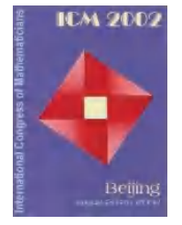
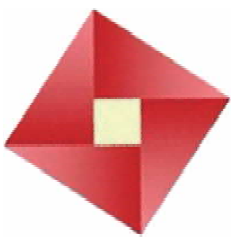

我们知道直角三角形的内角之间存在一些特殊的关系——一个角为直角，另外两个锐角互余。那么，直角三角形的三条边之间是否也存在某种特殊关系呢？
让我们首先观察正方形瓷砖铺成的地面。
如图13.1.1，是正方形瓷砖铺成的地面。观察图中着色的三个正方形，两个小正方形（面积分别为$S_1$、$S_2$）的面积之和等于大正方形（面积为$S_3$）的面积，即：
这说明在等腰直角三角形中，两直角边的平方和等于斜边的平方。
那么在一般的直角三角形中，两直角边的平方和是否等于斜边的平方呢？
观察图13.1.2，如果每一小方格表示$1\ \text{cm}^2$，那么可以得到：
正方形 $S_1$ 的面积 = $9\ \text{cm}^2$
正方形 $S_2$ 的面积 = $16\ \text{cm}^2$
正方形 $S_3$ 的面积 = $25\ \text{cm}^2$
我们发现正方形面积之间的关系是：$S_1 + S_2 = S_3$，即 $9 + 16 = 25$。
由此，我们得出直角三角形三边长之间存在的关系是：$3^2 + 4^2 = 5^2$。
⬇ 拖动滑块调整直角三角形的两直角边，观察三边的面积关系：
作出两条直角边分别为 $3\ \text{cm}$ 和 $4\ \text{cm}$ 的直角三角形，然后用刻度尺量出斜边的长，并验证上述关系式对于这个直角三角形是否成立。
对于任意一个直角三角形，它的三边长之间是否都有这样的关系呢？
让我们回到导入语中所提到的2002年国际数学家大会的会标——那个像旋转风车的会徽（图13.1.3→图13.1.4）。
它是由4个全等的直角三角形和1个小正方形组成的图案（图13.1.4）。记直角三角形的两条直角边长分别为 $a$、$b$，斜边长为 $c$。


于是图13.1.4中各个部分的面积之间有如下的等式：
大正方形面积 = 4个直角三角形面积 + 小正方形面积
$$c^2 = 4 \times \frac{1}{2}ab + (b-a)^2 = 2ab + b^2 - 2ab + a^2$$化简得：
$$\boxed{a^2 + b^2 = c^2}$$由上面的探索与验证，可以发现：对于任意的直角三角形，如果它的两条直角边分别为 $a$、$b$，斜边为 $c$，那么一定有 $a^2 + b^2 = c^2$。
这种关系，我们称之为勾股定理，这就是我国古代所发现的勾股定理。
即：如果直角三角形的两条直角边长分别为 $a$、$b$，斜边长为 $c$，那么
几何语言：在 $\triangle ABC$ 中，$\angle C = 90°$，则 $AC^2 + BC^2 = AB^2$。
勾股定理揭示了直角三角形三边之间的关系。我国古代，人们把直角三角形中较短的直角边称为"勾"，较长的直角边称为"股"，斜边称为"弦"。
弦图最早是由三国时期的数学家赵爽在为《周髀算经》作注时给出的，它标志着中国古代伟大的数学成就。2002年在北京召开的国际数学家大会（ICM 2002）的会徽，其图案正是由"弦图"演变而来。
在西方，这一定理被称为毕达哥拉斯定理（Pythagorean Theorem），早在几千年前，我国古代劳动人民就已经发现并开始应用勾股定理了。勾股定理有几百种证明方法，体现了数学思想方法的多样性。
在 Rt$\triangle ABC$ 中，$\angle B = 90°$，$AB = 6$，$BC = 8$。求 $AC$ 的长。
解： 根据勾股定理，可得
$$AB^2 + BC^2 = AC^2$$
所以 $$AC = \sqrt{AB^2 + BC^2} = \sqrt{6^2 + 8^2} = \sqrt{36 + 64} = \sqrt{100} = 10$$。
1. 在 Rt$\triangle ABC$ 中，$AB = c$，$BC = a$，$AC = b$，$\angle C = 90°$。
(1) 若 $a = 6$，$c = 10$，求 $b$；
(2) 若 $a = 24$，$c = 25$，求 $b$。
解：
(1) 根据勾股定理：$b^2 = c^2 - a^2 = 10^2 - 6^2 = 100 - 36 = 64$
所以 $b = \sqrt{64} = 8$。
(2) 根据勾股定理：$b^2 = c^2 - a^2 = 25^2 - 24^2 = 625 - 576 = 49$
所以 $b = \sqrt{49} = 7$。
2. 如果一个直角三角形的两条边长分别是 $3\ \text{cm}$ 和 $4\ \text{cm}$，那么这个三角形的周长是多少厘米？（精确到 $0.1\ \text{cm}$）
解：
分两种情况讨论：
情况一：如果 3 cm 和 4 cm 都是直角边
斜边 $c = \sqrt{3^2 + 4^2} = \sqrt{9 + 16} = \sqrt{25} = 5$ (cm)
周长 $= 3 + 4 + 5 = 12$ (cm)
情况二：如果 4 cm 是斜边，3 cm 是直角边
另一直角边 $b = \sqrt{4^2 - 3^2} = \sqrt{16 - 9} = \sqrt{7} \approx 2.65$ (cm)
周长 $\approx 3 + 4 + 2.65 = 9.65 \approx 9.7$ (cm)
答：这个三角形的周长是 12 cm 或 9.7 cm（精确到 0.1 cm）。
数形结合：用正方形面积关系直观理解代数等式 $a^2+b^2=c^2$。
归纳推理：从特殊（等腰直角三角形）到一般（任意直角三角形）。
文化传承：勾股定理体现了中国古代数学的辉煌成就。